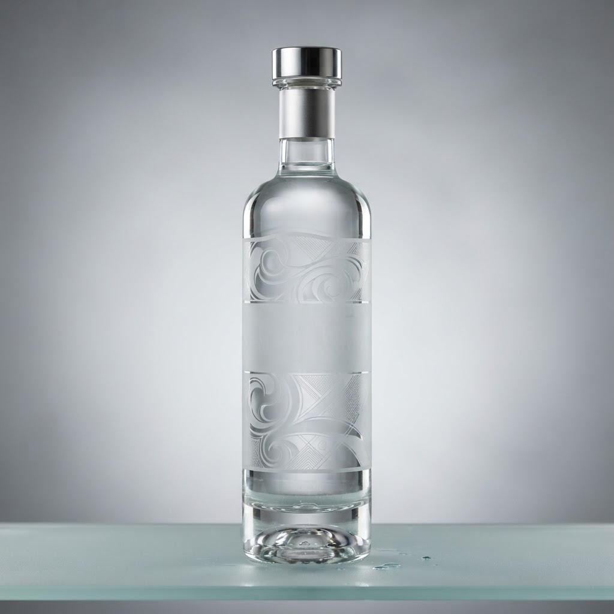

Доставка алкоголя на дом с доставкой в Василеостровском районе
Васильевский остров с его вековыми гранитными набережными требует особого подхода к комфорту. Когда на город опускаются сумерки, профессиональная доставка алкоголя на дом с доставкой в Василеостровском районе становится единственным логичным решением для ценителей качества.
Почему важна быстрая доставка алкоголя на дом с доставкой в Василеостровском районе
Представьте: вы находитесь в сердце старого Петербурга, где каждый мост имеет свой характер, а ритм жизни не затихает до рассвета. В отличие от сомнительных сервисов, обещающих привезти товар «когда-нибудь», наш подход базируется на безупречной логистике и знании каждого переулка острова. Мы понимаем, что ожидание растягивает время до бесконечности, поэтому ориентируемся на часовой интервал. Качество нашего сервиса определяется отсутствием задержек, профессионализмом курьеров и строгим соблюдением условий хранения напитков. В то время как случайные курьеры могут плутать в лабиринтах дворов-колодцев, наши специалисты прокладывают маршрут с точностью штурмана. Мы не просто привозим заказ — мы обеспечиваем непрерывность вашего отдыха, гарантируя, что бутылка вина или другой напиток окажутся у вашей двери в идеальном состоянии, с сохраненной температурой и оригинальной маркировкой. Это выбор тех, кто ценит время выше иллюзорной экономии.
Ключевые критерии выбора ночного сервиса
Чтобы отличить профессиональный сервис от дилетантского, достаточно обратить внимание на три детали. Первый маркер качества — это прозрачность состава заказа. Качественный поставщик всегда предоставит полную информацию о происхождении напитка, избегая контрафактных предложений. Второй аспект — скорость обработки заявки в ночное время. Если оператор отвечает долго, а курьер не знает района, это сигнал к отказу. Мы же обеспечиваем оперативную передачу заказа в работу сразу после вашего обращения, минимизируя время ожидания. Третий критерий — это отношение к клиенту: отсутствие лишних вопросов и вежливый сервис без навязывания услуг. Сравнивая наш подход с обычными службами, вы заметите разницу в каждой мелочи: от аккуратной упаковки до пунктуальности, которая возведена в ранг стандарта. Мы не ищем оправданий пробкам или удаленности адреса, мы просто выполняем свою работу безупречно, опираясь на опыт и глубокое знание специфики Васильевского острова.
Привезете ли вы заказ, если я живу в глубине жилого комплекса?
Да, наши курьеры отлично ориентируются в планировке кварталов и находят даже самые скрытые парадные. Мы гарантируем доставку в течение часа независимо от сложности расположения вашего дома в районе.
Итог
Итог всегда один: назвать следующий шаг покупателю — оформить заказ и получить его в течение часа в своём районе.
Заказать доставку
Оформите заказ сейчас: привезём за 40-60 минут в любой район Петербурга, круглосуточно.
Призыв
Доставка водки домой спб с доставкой в Василеостровском районеНужно ли вам ждать рассвета, когда праздник на Васильевском острове требует продолжения? Ночная доставка водки домой спб с доставкой в Василеостровском район… Со скольки продают алкоголь в санкт петербурге с доставкой в Василеостровском районеВасильевский остров славится своими гранитными набережными и ночными огнями, но найти выпивку после полуночи здесь бывает непросто. Мы решили эту проблему, о…
Со скольки продают алкоголь в санкт петербурге с доставкой в Василеостровском районеВасильевский остров славится своими гранитными набережными и ночными огнями, но найти выпивку после полуночи здесь бывает непросто. Мы решили эту проблему, о…